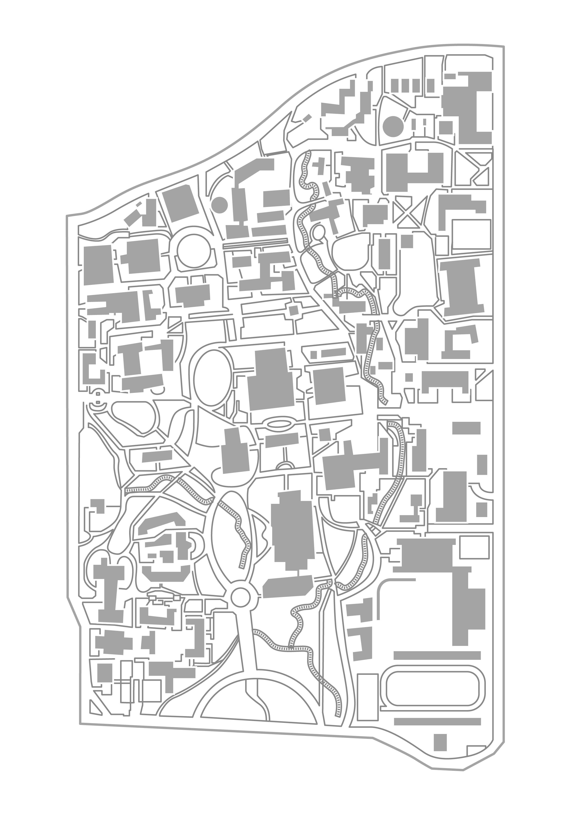

A fir near North Gate; about 35' up puts you on level with McCone's third floor windows.
Past the manzanitas at the southwestern corner of Observatory Hill, a cement retaining wall allows access to a shallow bed of stones on level with the second floor of East Asian Library.
A tall, dense fir that opens, after navigating closely set branches, to a view of Memorial Glade and the East Asian Library lattice.
A nice magnolia with low branches to sit out over the path and a high junction that looks over VLSB.
A tree near VLSB with smooth branches that turn sharply to the vertical six feet from the trunk. Branches part at 50', on level with the roof of Moffit, to reveal good views to the northeast and northwest.
An established oak; climb down the wall immediately behind to access Moffit's strange basement courtyard.
The southeast corner of VLSB has two sizeable trees: an oak that looks into one of the larger lecture halls (2060) and a pine that sits over the large, rectangular exhaust pit in the corner. Regular cement grooves let you climb down into the pit and a thin, sloped ledge reaches the window sills horizontally.
Two rows of tall, thin aspens flank the lamps in front of the gym. They move considerably in the wind.
The largest oak in Faculty Glade looks north over the Last Dryad: a bronze by Alexander Stirling Calder, which sat in the inner courtyard of Hearst Gym until it was moved to the glade in 1968.
A 20' climb up either of the flanking trees gives access to the second floor balcony of Hertz Hall. Concerts can be heard within.
A long, angled branch spans the gap between two oaks, forming a path 35' over Strawberry Creek. Look down and to the south to see into the faculty club.
The tallest of a stand of ponderosa pines. After dusk, an enormous shadow of anyone climbing is cast onto the southern face of the Campanile.
A gallery of pollarded London Planes beneath the Campanile. The lowest branches of the first immediately northeast of the central sculpture can be reached from the back of the bench; another, in the southwest corner, is accessible from the marble wall. Try to circle the courtyard without touching the ground.
A magnolia stands over South Hall Road, directly across from the Bancroft Library steps. The highest junction at 45' is one of the nicest spots on campus at dusk.
A cluster of tall, thin trunks are wired together on the southeast corner of Wheeler Hall. At 40', the third story window of 220 Wheeler is within reach, or, slightly farther, the lower tier of the roof. From there, the facade and the upper roof are a short climb away. The latter looks down into the odd interior courtyard, which is accessible from the third floor, inward-facing hallway windows.
Immediately south of Wheeler's entrance is the new Wheeler Oak. The original was removed in 1934.
The sloping southwest corner of Wheeler has three trees. The closest to Dwinelle looks over Sproul Plaza and the hills to the east. The top of the northmost is at eye level with the roof above the fourth story and the corner offices on the way up. Behind these, walk north through the small pocket between the west wall and a long, tall line of shrubs. Where the wall indents, it's an easy climb up to the third floor ridge and from there into classrooms, or down through skylight windows at foot level into basement classrooms. A dense thicket of dead shrubs marks the other entrance to this path from the northwest corner.
Climb over the west side of Sather bridge into the first branch of the northmost oak. Descend the remaining 20' to reach the north bank of Strawberry creek. This offers access to the tunnel beneath the bridge during the rainy seasons when the sloped banks are too slippery.
Pull up onto the wooden beams above the outdoor cafe with the chessboards to find a small roof. The cement walls around the electrical box form a nest that looks over Memorial Glade and Hearst Mining Circle. This is likely the nicest spot on campus to sit at night, and this whole area is full of potential, from the odd little patios set down into the engineering library to the helpfully textured walls of Davis Hall.
Along the northern wall of Hearst Gym are a number of trees that look down onto the outdoor pool deck on the second story; the water is incredibly blue at night, lit from within. From the top of the westernmost tree, climb over the fence and drop onto the pool deck. Due east, the deck opens to a mezzanine that surrounds a small patio below on the first floor. The Last Dryad, now in Faculty Glade, originally sat here. A few oaks are tall enough to reach from the cement railing. Descend and exit through the northern door to the main gym hallway if unlocked; climbing back out proves more difficult.
Deep grooves in the cement offer easy access to Edwards Stadium right behind the circular ticket building. Across the field, the bleachers lead to a press box with roof access through a poorly secured ladder. From the top, you can see into the partially abandoned building at the corner of campus.
Pimentel's rooftop is at waist level from the sidewalk on University Drive. This spot gets popular after finals; stay low or you will be seen.
The inexplicable little Russian-looking structure behind Gilman covers HVAC maintenance paths: lots of amusing areas within.
Rooftop access from the northeast corner of the top floor of Latimer. The first door is often unlocked but the second will swing shut behind you; if stuck, it's only a short drop to balconies below where a chem student might let you in through a lab.
Pull up onto the concrete overhang above the back door to Zellerbach. Using the grooves in the wall for leverage, stretch around the corner and up onto the playhouse roof. It's straight up from there, but starting from the roof's northeast hip makes for an easier climb; the surface itself is slippery but the metal ridges are very forgiving holds. The short retaining wall at the top leads to a flat, open space above the playhouse, the first of many. Follow the ladders through the trench and keep in mind your visibility to the south. Of the many rooftops you will encounter, the final one is the most thrilling -- lost in the fog layer with the constant drone of HVAC.